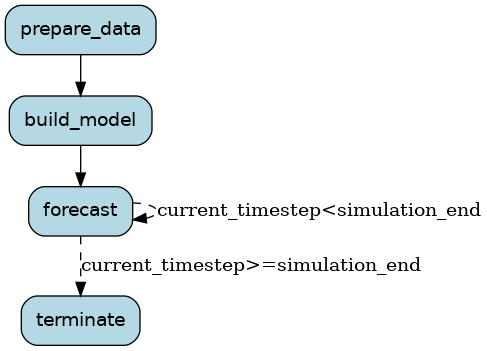

Simulations¶
At a high level, simulations generally run over a set of time steps and maintain state. The user then manages the state, which becomes the input to the next time step, as well as output data to analyze. Burr provides a simple way for you to construct, manage, and introspect the state of your simulation.
This example is a WIP – see the placeholder/example sketch in the repository. We’re actively looking for contributors + ideas via this issue to track.
For instance:
Time-series Forecast¶
A time-series forecast will execute a computation (say, feature-engineering + a model) at each step for which the user is predicting. The user will then store a history of data (predictions, raw data, etc…), and use that to pass into the next step in the simulation.
The merge into state + query from state capabilities can be complicated – windowed operations, rolling averages, etc.. may all be useful,
and they may want to visualize simulations live (E.G. by tracking some metrics as it goes along). Burr is a natural way to persist this – even
if it is just a few actions (query_data, feature_engineer, forecast), the persistence capabilities + hooks can allow
for logging to whatever live framework one wants to visualize, and centralizing the logic of reading from/writing to state.
.
Portfolio Construction¶
This is a special case of time-series forecasting, in which one wants to simulate a financial portfolio. Actions might be:
query_data- get data from state/load externallyprepare_data- format to something you can make predictions onforecast- runs a model to do stock-price fore astingconstruct_portfolio- uses the forecast to construct a portfolioevaluate_portfolio- evaluates the portfolio
Each one of these could be a DAG using Hamilton, or running any custom code.
Multi-agent simulation¶
See Stanford Smallville for an example. For multiple independent “agents”, Burr could help model the way they interact. This could be multiplke Burr applications, applications called within actions, or an action that loops over all “users”. We are still figuring out the best way to model this, so reach out if you have ideas!
Code example¶
"""
This module contains a stubbed out structure for one way of doing a simulation
for forecasting purposes.
For more sophisticated forecasts where prediction of one timestep
depends on the previous timestep, you need to forecast on a per-step basis. So
you're effectively simulating the future at each step. This is a simple example of
how you might structure such a simulation.
"""
from typing import Tuple
from burr.core import Application, ApplicationBuilder, State, expr
from burr.core.action import action
@action(reads=["data_path"], writes=["data"])
def prepare_data(state: State) -> Tuple[dict, State]:
"""This would pull the data, prepare it, and return it."""
# pull data, prepare as necessary
result = {"data": _process_data(state["data_path"])}
return result, state.update(**result)
@action(reads=["data", "simulation_start"], writes=["model"])
def build_model(state: State) -> Tuple[dict, State]:
"""This would fit the model on data before the simulation start date."""
training_data = state["data"]
model = _fit_model(training_data, upto=state["simulation_start"])
result = {"model": model}
return result, state.update(**result)
@action(
reads=["simulation_start", "simulation_end", "model", "data", "current_timestep"],
writes=["data"],
)
def forecast(state: State) -> Tuple[dict, State]:
"""This action forecasts the next timestep in the simulation and appends it to data."""
model = state["model"]
data = state["data"]
start_time = state["simulation_start"]
current_time_step = state.get("current_timestep", start_time)
next_timestep = _forecast_timestep(model, data, current_time_step)
data = _update_data(data, next_timestep)
result = {"data": data, "current_timestep": next_timestep}
return result, state.update(**result)
@action(reads=["data"], writes=[])
def terminate(state: State) -> Tuple[dict, State]:
"""This is a terminal step that would save the forecast or do something else."""
return {}, state
def application() -> Application:
app = (
ApplicationBuilder()
.with_actions(prepare_data, build_model, forecast, terminate)
.with_transitions(
("prepare_data", "build_model"),
("build_model", "forecast"),
("forecast", "forecast", expr("current_timestep<simulation_end")),
("forecast", "terminate", expr("current_timestep>=simulation_end")),
)
.with_state(
data_path="SOME_PATH",
simulation_start="some-value",
simulation_end="some-end-value",
)
.with_entrypoint("prepare_data")
.build()
)
return app
# --- stubbed out functions to fill out for the simulation
def _process_data(data_path: str) -> object:
"""This function would read and process data from a file."""
return {}
def _fit_model(data: object, upto: str) -> object:
"""This function would fit a model on data upto a certain date."""
return {}
def _forecast_timestep(model: object, data: object, current_timestep: str) -> object:
"""This function would forecast the next timestep in the simulation given the model and data."""
return {}
def _update_data(data: object, next_timestep: object) -> object:
"""This function would update the data with the forecasted timestep."""
return {}
if __name__ == "__main__":
_app = application()
_app.visualize(
output_file_path="statemachine", include_conditions=True, view=True, format="png"
)
# you could run things like this:
# last_action, result, state = _app.run(halt_after=["terminate"])